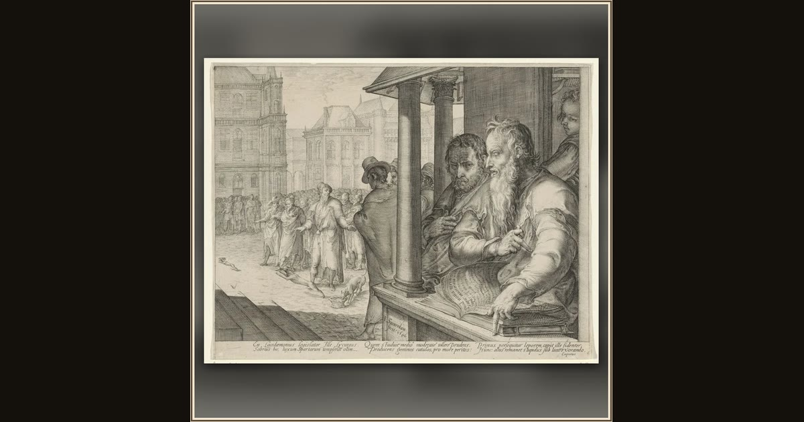

Lycurgus houdt een verhandeling over de voordelen van opvoeding
Jan Saenredam · 1596 · rijksmuseum
Lycurgus addresses a gathered crowd on education, with an open book at his side; Aristotle discusses this Spartan lawgiver's attempt to regulate civic conduct (2.1270a) Explore its place in Aristotle's Politics, Book II, section 20.